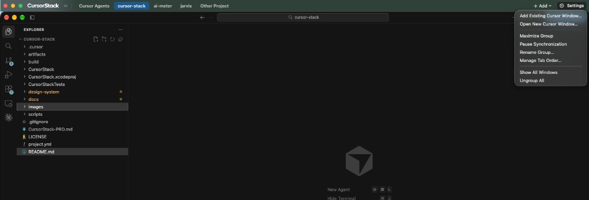
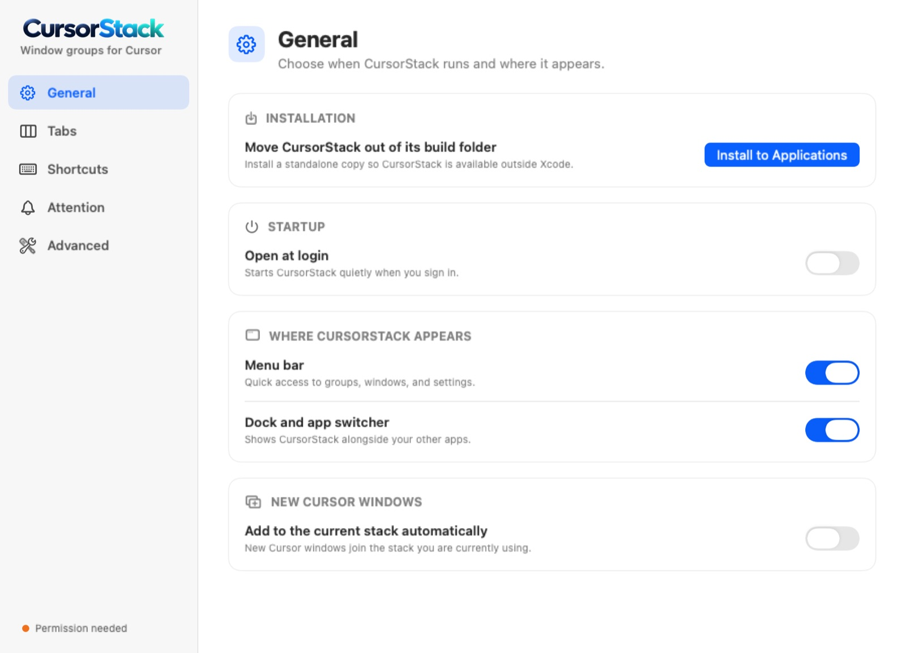
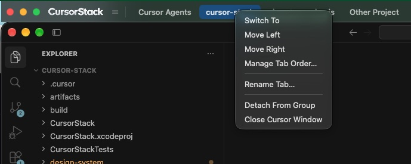
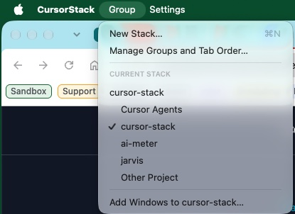

Multiple Cursor windows. Which one is waiting?
Every project gets its own window, and macOS treats each one as a stranger.
One strip. Every project.
CursorStack lines up your Cursor windows and puts a tab strip on top. When an agent finishes or asks a question, its tab turns amber.
Try it: click a tab with an amber dot.

Know which agent needs you.
While a chat runs in one project, you’re usually working in another. The tab tells you when to come back, with or without a notification.
Chat running
An agent in that window is working. Leave it alone.
Waiting on you
It finished, or it wants an answer. One click brings that window forward.
Needs attention
Something went wrong in that chat. Go and look.
Put the strip on any edge.
Top is the default, so Cursor’s own search field stays clear. Move it to the bottom or down one side in Settings.
Switch without the mouse.
Change these in Settings. CursorStack warns you if one clashes with macOS or another app.
It moves windows. That’s all.
- Reads your code
- Changes Cursor
- Uploads your screen
- Wants an account
The one network request is Sparkle checking GitHub for a signed update, which is verified before it installs.
The real app.
Settings, the tab menu, and the group menu, as they look on a Mac today.


